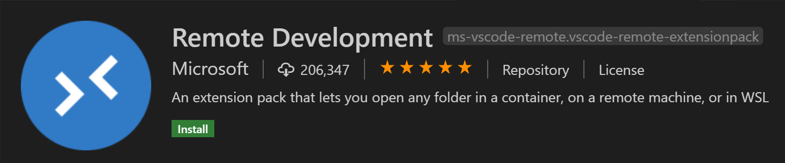

Remote Development tutorials
Visual Studio Code Remote Development allows you to use a container, remote machine, or the Windows Subsystem for Linux (WSL) as a full-featured development environment.

Remote tutorials
The tutorials below will walk you through running Visual Studio Code with the Remote Development extensions.
| Tutorial | Description |
|---|---|
| Remote via SSH | Connect to remote and virtual machines with Visual Studio Code via SSH. |
| Working in WSL | Run Visual Studio Code in Windows Subsystem for Linux. |
| Containers | Run Visual Studio Code in a Docker Container. |
| GitHub Codespaces | Connect to a codespace with Visual Studio Code. |
Remote extensions
Install all three Remote extensions with the Remote Development extension pack.